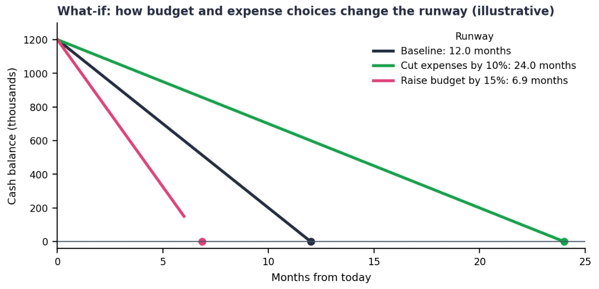
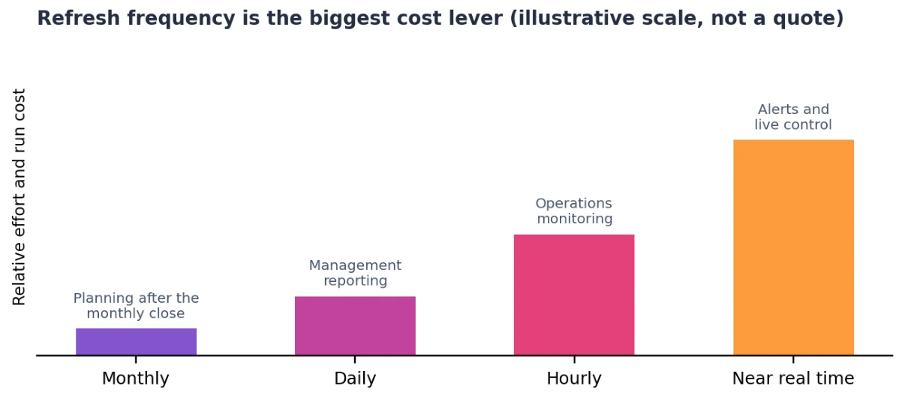

ETL / Dashboard development / Process playbook
ETL and Dashboard Process Playbook
Build a trusted dashboard. Create a process your team can run.
The playbook at a glance
When one person knows how to refresh the report, fix the pipeline, and explain the numbers, every absence becomes a risk. This playbook turns that knowledge into a repeatable ETL and dashboard delivery process.
Start with the business decision and the output users need. Work backwards to the data sources, agree on KPI definitions and refresh frequency, then build, validate, monitor, and hand over. A worked FP&A dashboard example connects the steps, from cash-runway scenarios to source coverage and reconciliation.
Free PDF · 28 pages · 1.1 MB · No sign-up

Inside the playbook
Better decisions start before the build.
These two charts show why requirements matter: what users need to decide, and how fresh the data must be. Select either chart to view it at a larger size.
What should the dashboard help you decide?
The worked finance example starts with a question: how many months of cash remain? Comparing the baseline with spending scenarios makes the output requirement concrete.


How fresh does the data need to be?
A monthly planning report and a live operational alert need different infrastructure. Agreeing on refresh frequency early helps the team estimate build effort and ongoing support.


A repeatable ETL process
From the first question to a confident handover.
Learn how to map each dashboard output to a source, resolve missing inputs before development, and define transformation rules that can be tested against a known answer.
The guide covers data quality gates, AI-assisted transformation with human review, user acceptance testing, pipeline monitoring, incident runbooks, change control, and ownership after go-live.
Six reusable appendices include a project kickoff checklist, runbook template, go-live checklist, glossary, output requirement sheet, and source mapping worksheet.
Planning a project? Explore our ETL pipeline development and Power BI dashboard services.
Get the complete playbook
Download all 28 pages, including the worked FP&A example, process diagrams, charts, and templates your team can reuse.
Download PDFVersion 1.0 · November 2026 · 1.1 MB
About the examples: Charts and scenarios are illustrations from the Nexusflow playbook, not customer results or promised savings. The PDF provides the assumptions and full process guidance.
Also read our starred report: Stale by Thursday — the hidden cost of manual spreadsheet work.